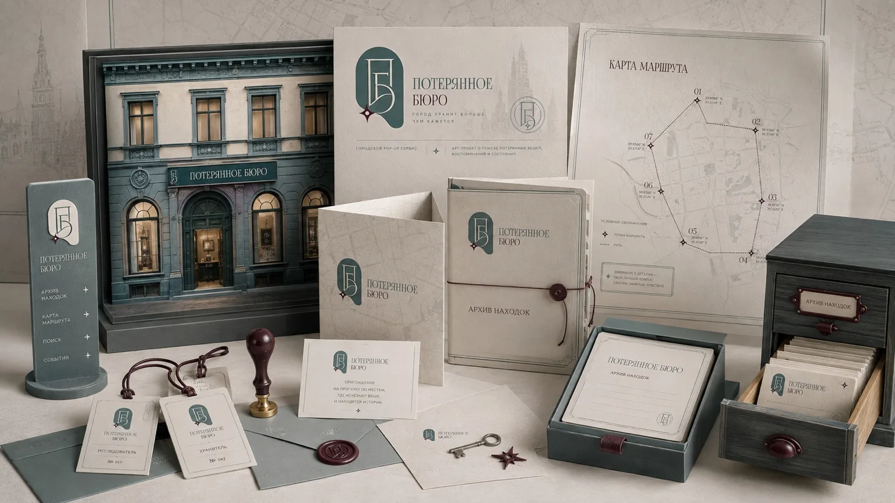
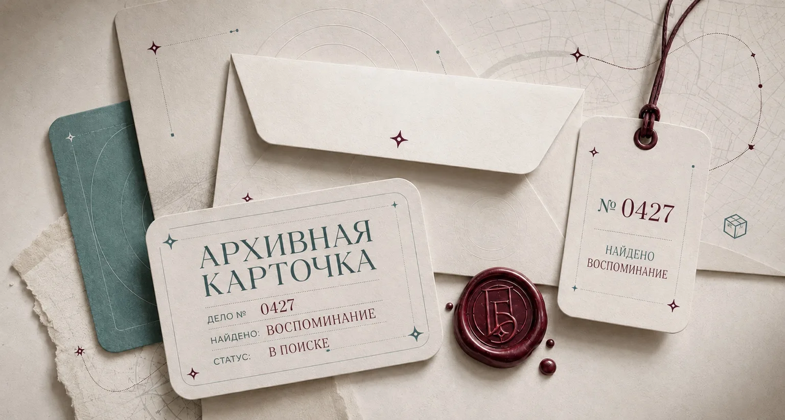
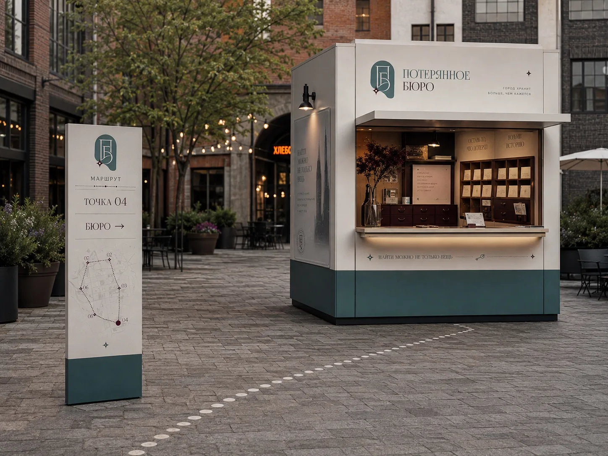
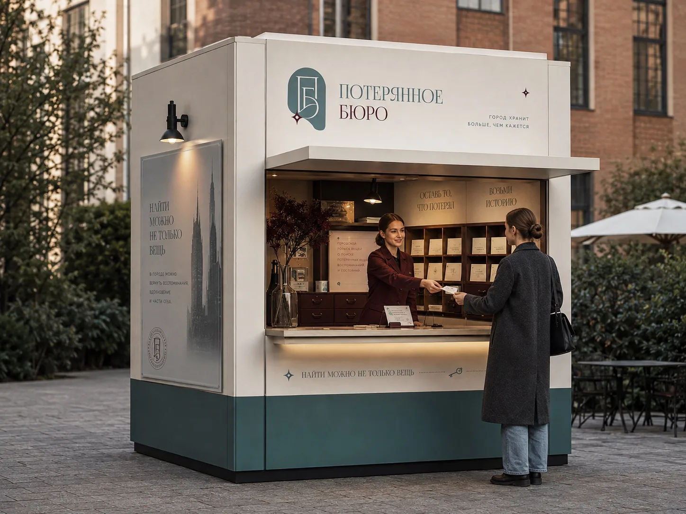
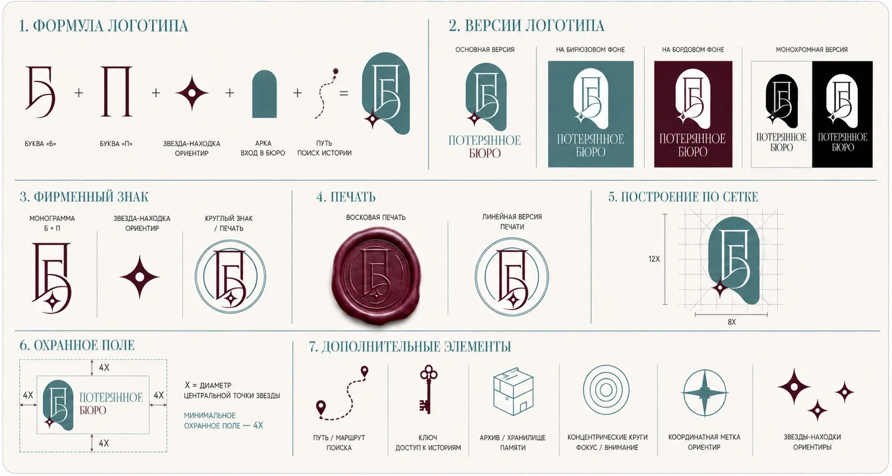
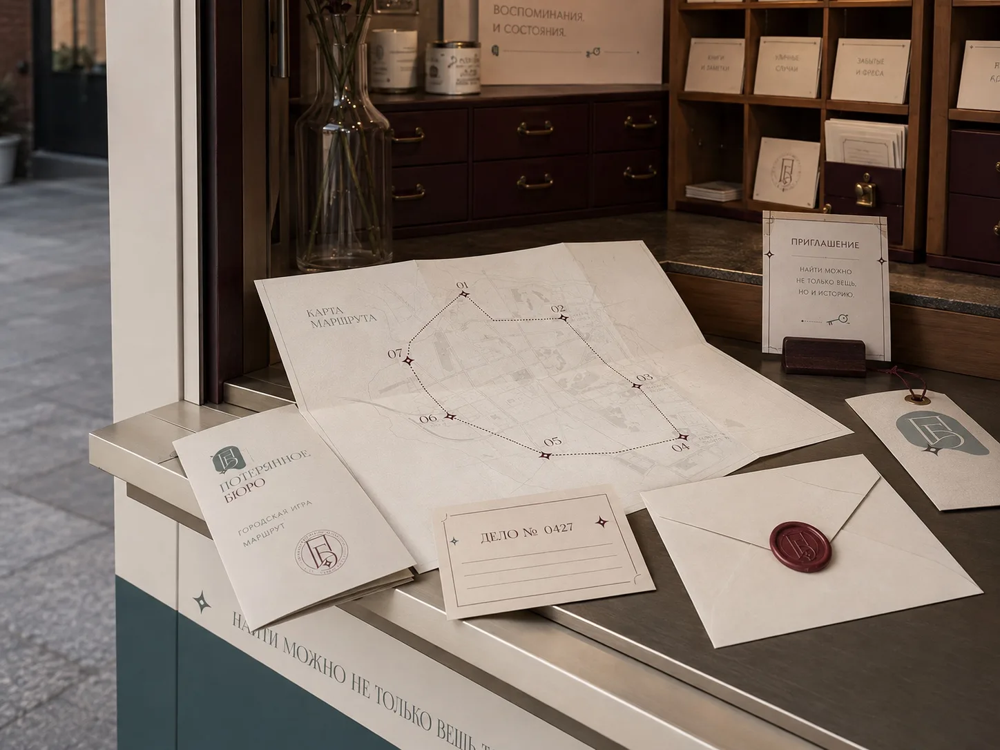
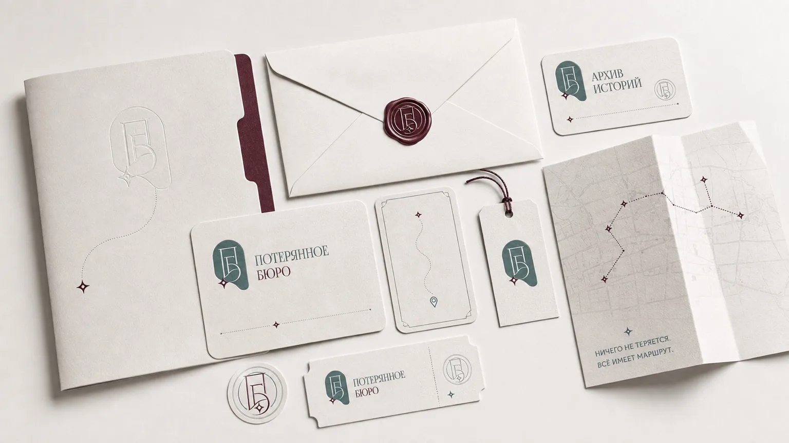
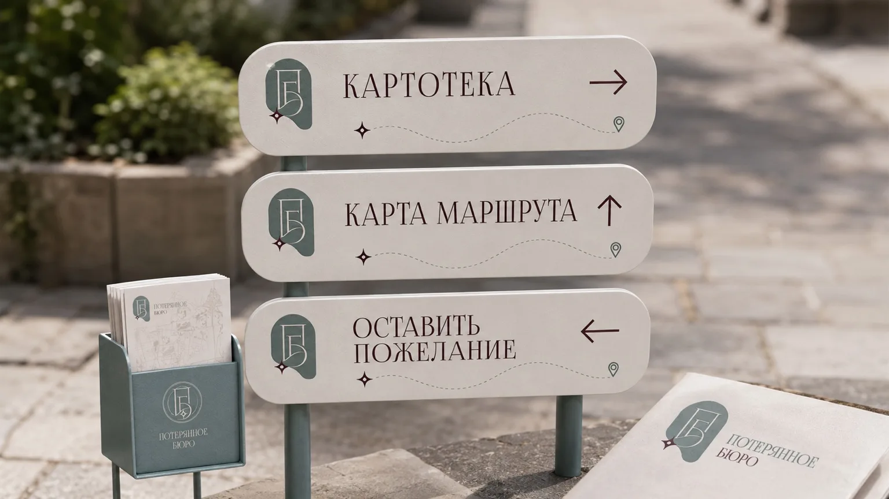
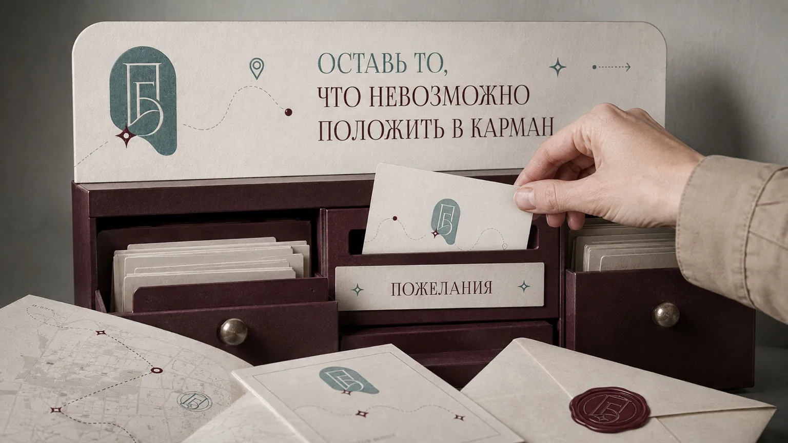
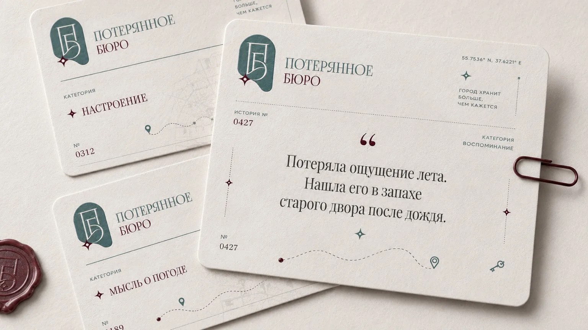

Архив как метафора
Нумерация, карточки и печати задают характер вымышленного бюро. В центре проекта — истории людей, а не поиск физических вещей.
Айдентика · навигация · среда
Концепция городского арт-проекта, который собирает истории о нематериальных потерях.

Контекст
Придать осязаемую форму воспоминаниям и чувствам. Связать идею общего архива с карточками, маршрутом и точкой взаимодействия в городе.
Архивная карточка, номер дела и печать превращают личную историю в экспонат. Линии маршрутов и координаты связывают бумажные носители с городской средой.
Логотип, печати, карточки, карты, полиграфия, концепция навигации и оформления бюро.
Нумерация, карточки и печати задают характер вымышленного бюро. В центре проекта — истории людей, а не поиск физических вещей.
Карта и указатели связывают точку бюро с городом. Звезда, ключ и маршрутная линия образуют набор повторяемых символов.
Бордовый, бирюзовый и светлая бумага сочетают архивную строгость с более личной интонацией.
Макеты и визуализации









Итог
Разработана учебная концепция айдентики, печатных носителей и городской среды. Изображения бюро показывают проектное предложение.
Обсудить работу в команде ↗{kind=link}
{kind=link}
{kind=link}
{kind=link}
{kind=link}
{kind=link}
{kind=link}
{kind=link}
{kind=link}